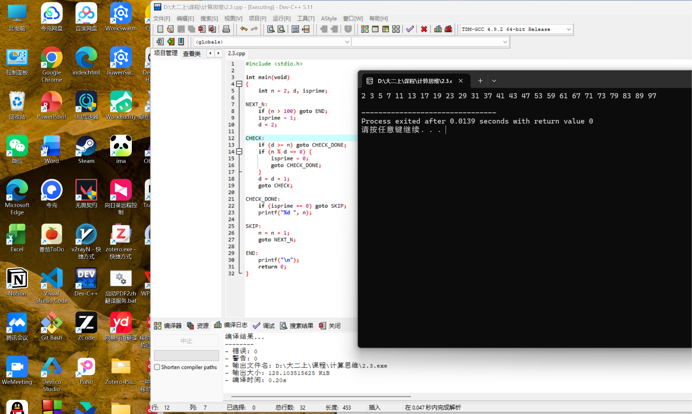
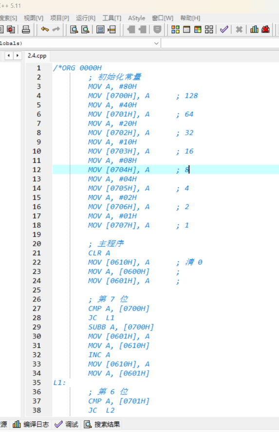
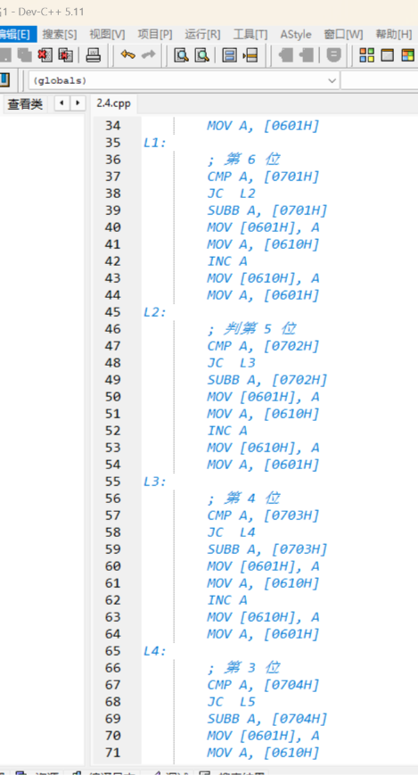
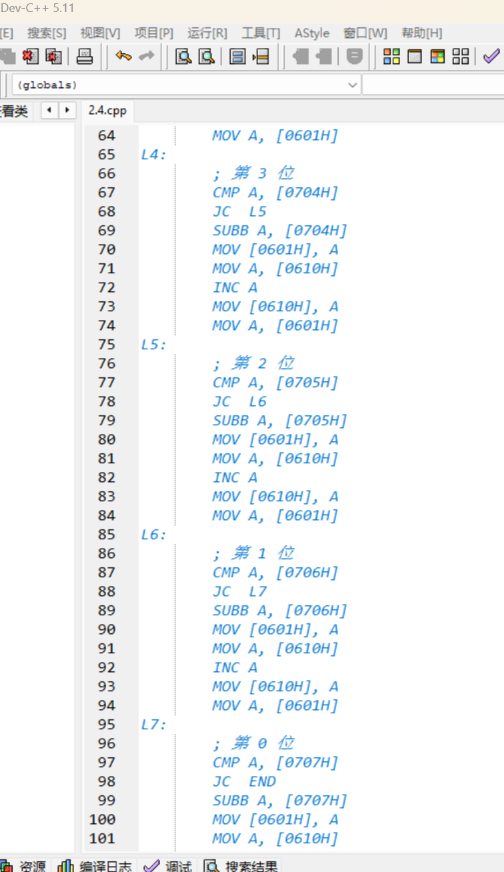
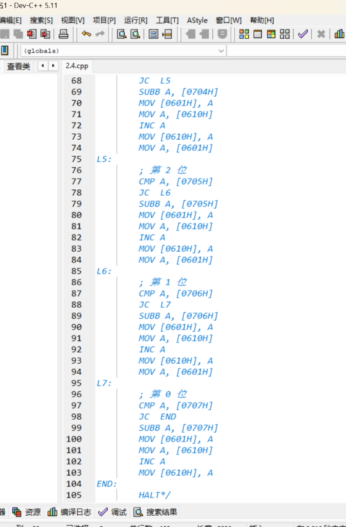
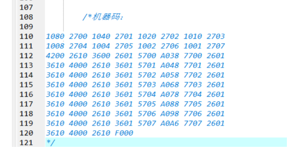
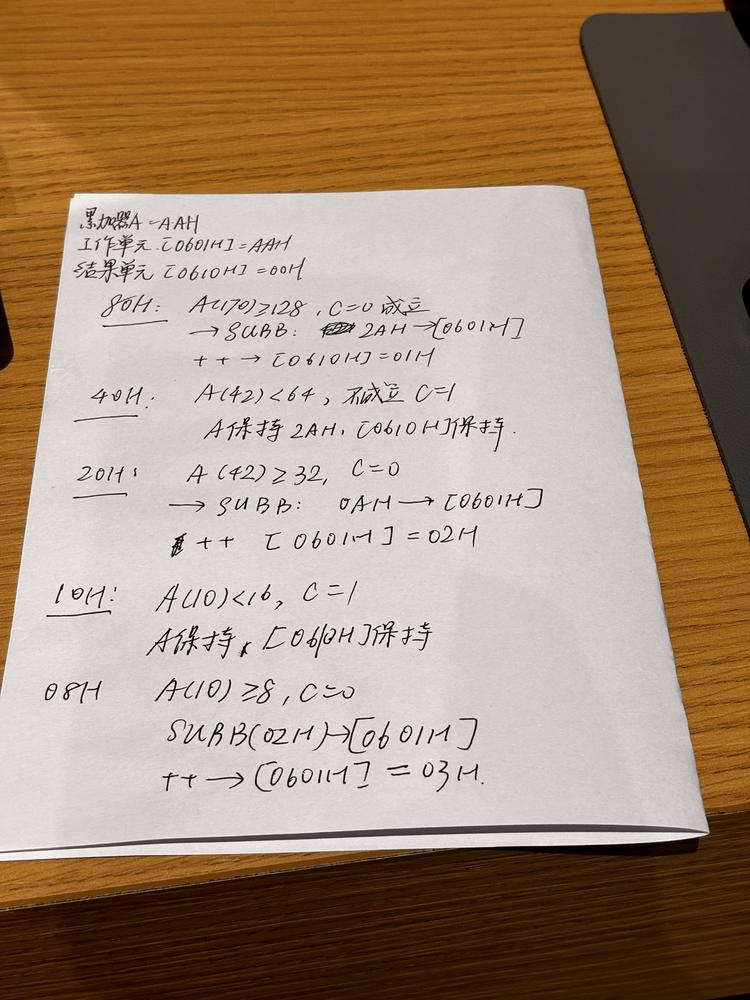
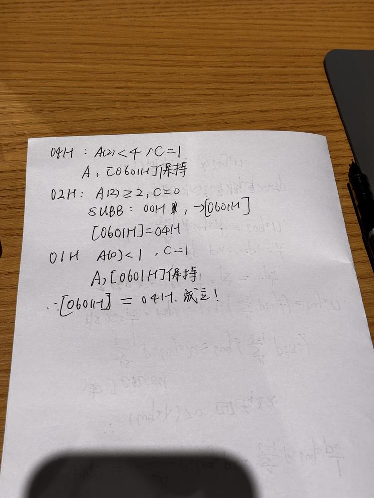

简答题第 1 题
为什么通用计算机基本上都是二进制的？
因为二进制在物理实现、逻辑对应和运算规约上都最简单。
上课说从开关、继电器、三极管讲到逻辑门，再把数值运算规约到二进制加法，这条路线决定了通用计算机采用二进制。
物理上，开关通断、三极管导通/截止、电平高低只有两个稳定状态，抗干扰强、成本低、可靠性高。
逻辑上，二值正好对应布尔代数的真/假，与门、或门、非门可以直接用电路实现。
运算上，整数运算可逐步规约到二进制加法，半加器、全加器容易用逻辑门搭出来。
存储上，数字计算机每个单元只存0/1，与“离散状态”的前提一致。
简答题第 2 题
为什么将指令分成几步执行？
因为CPU是同步时序电路，按节拍工作，一条指令要分“取指令、译码、取操作数、运算、写回结果”几步完成。
第一，总线一个时刻只能有一个数据提供者，分步可以用控制信号分时接通不同部件，避免冲突
第二，每步只做一件明确的事，控制逻辑简单，指令容易扩展。
第三，分步后不同步骤可以由不同功能部件重叠执行，形成指令流水，提高整体吞吐率。
所以分步既是为了控制简单、避免冲突，也是为了提高效率。
论述题第 3 题
仅使用 if 和 goto 作为控制流语句（不准使用 else，循环语句，子程序调用），使用 C 语言编写程序，输出 100 以内的素数。

论述题第 4 题
使用示例指令系统（V2）实现程序，功能如下：统计 0600H 单元的字节的 2 进制表示中有多少个 1，结果写入 0610H 单元，并将该程序翻译成机器码。





验证：

